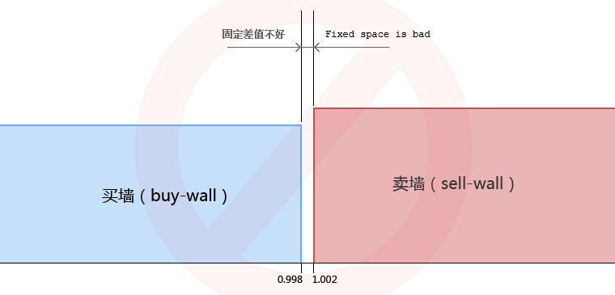
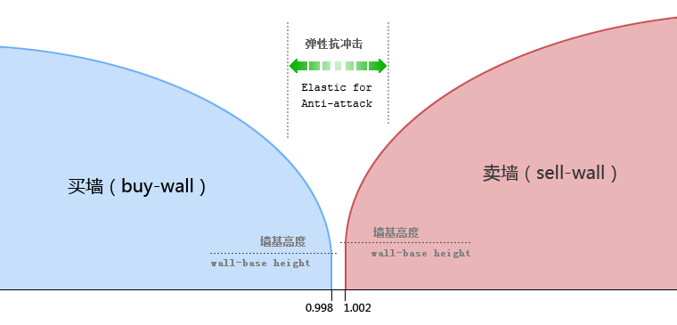
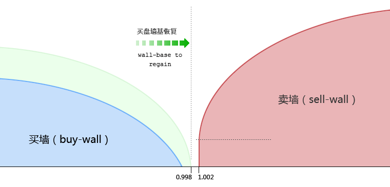
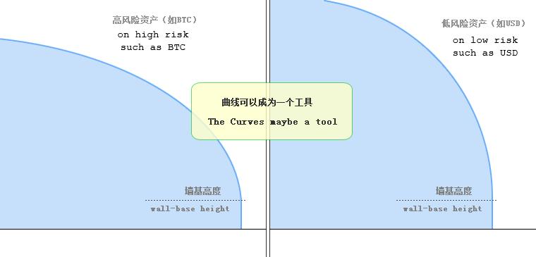

NuBits买卖墙锚定设计的特点和改良
昨天Peercoin社区发生了一件不算太小的事——www.ccedk.com交易平台上NBT/BTC交易对的买墙被砸穿了，为避免事态扩大，NBT的保管人停止了交易机器人。
PPC中国社区进行了小范围讨论，总的来说，初步认为可被通存通兑的NBT作为货币，不适宜与波动太大的虚拟币构建交易对。这是因为，NBT是以被动买卖墙的模式锁定价格（价格由机器人收集市场行情计算决定），保管人并不会主动去进行买卖操作，也就是说，保管人的NBT不是用于炒作以赚取利润，保管人也不是一个操盘手。而这样的设计，在以“操盘技艺高低决定盈亏”的数字资产交易行业里，无疑就是一个另类的存在——它不是在赚取利润，它是在吸收所有投机者的风险，并将这种风险的最终损失传递到自身股东身上！
如此的离谱？……那NBT又是什么呢？
其实，NBT是设计为一种货币，一种试图相对于社会整体市场价值稳定的货币（这是人类历史上从未有过的尝试）。而作为货币，公司的盈利无法来源于货币的升值。如果货币公司能够稳定提供价值稳定的货币，进而市场认可采用，货币的增量发行、兑换费率、金融借贷等才是公司的盈利点。
或许，囿于法律法规的制约，初期为了发展，NBT需要与BTC或PPC等高波动资产建立交易对，以扩大市场认知，并从中探索作为一个货币公司的内在含义。那么，我们该如何避免或者降低前述的风险，甚至或可获利呢？Nu才刚刚诞生半年不足，一切都在挫折中前行，正如NuBits白皮书最后的寄言：“最后，不要忘了Nu目前是一个实验性的软件，其表现可能不及预期。但是，持股人将不断对其完善。”
笔者不才，吸收PPC中国社区的小范围分析，对NBT的买卖墙设计提出如下改进（以“NBT/USD”交易对为例）。
原来的买卖墙设计
按照NuBits白皮书里的说法，假如交易平台的交易费率为0.2%，机器人挂的买单为0.998USD/NBT，卖单为1.002USD/NBT，初始的买卖墙形状如下。

垂直单一价格的买卖墙形成了强大的买卖盘阻力，同时锁定了价格，它为普通的兑换者提供了稳定的价格。但注意，这只是一种理想状态——它假定用户只是普通的因实际需求而来的货币兑换者。在现实的交易平台上，这样的用户甚至只是少数，因国情而异，大多数用户或许只是炒作者而已，他们试图高抛低吸来挣钱。
单一价格的垂直墙，如果不是足够高，它必然会被更强大的买卖力所摧毁——如果竞争者恶意做空或者做多的话。更进一步，世界上其实没有谁够能做到绝对的强大，强大者总是会被更强大者所战胜。所以，即便假设这里的买卖墙已十分强大，它也是脆弱的。
改进后的买卖墙设计
东方的哲学里，有一句名言，易曰：曲成万物而不遗；老子曰：曲则全。由此，我们尝试作如下改进：

在这里，买卖墙的基础价依然为 0.998USD/NTB 和 1.002USD/NTB，通常情况下，普通的兑换者可以正常的获得稳定的兑换价格。
如果有强大的资金试图做空或恶意做多，因为此时的市场是有深度的，曲线部分的买卖盘会让攻击者产生损失（注：机器人下的即时买单是从实际成交的卖单处获得，不是新的资金补充）。抛开市场波动风险导致的损失（如前述），这些攻击者的损失实际上成了系统的收益，所以这样的设计或许可以预防攻击（攻击者可以实施一种拒绝服务攻击——只摧毁墙基，让普通用户难以获得正常的兑换价，但这至少比前述攻击的危害小很多，并且攻击者也需要付出资金滞留的代价）。

如上图，如果攻击真的发生（或者是真的供需异常突然爆发），买盘已退到曲线部分，则机器人对买单的填充应该是由低到高……按照曲线设计逐步填充至墙基位置（而不是出于应急直接下墙基处的买单）。如果这种情况同时发生在多个平台上，基本可以判断是真实的需求而不是攻击，这样系统就应该启动NBT的回收机制（如提高停放利率，或转换为NSR股份）。
让曲率成为一种工具

图中的曲线斜率并不是固定的，它们可以由一个函数实现。如果我们评估某种兑换资产（比如BTC）风险较大，我们可以把斜率设置得小一些（曲线倾向于水平）；如果风险较小（譬如美元），我们又可以把斜率设置得大一些（向垂直方向靠）；如果兑换资产完全没有风险（不太可能），我们当然也可以把曲线的斜率设置为90度——那样就和原来的垂直墙没区别了。PS：风险其实并不只与资产本身有关，这是个综合的概念。
这样，通过调整不同兑换资产的买卖墙曲线斜率，我们就某种程度上控制了该交易对的风险大小。
这里的曲线仅仅是一个示例，它可能是双曲线、椭圆曲线的一个局部，或者正、余弦函数，或更可能的是，未来通过研究和验证了的某种xx曲线……谁知道呢？未来有待探索~~但我们有了一个工具。
关于作者
微博：@比特点点
邮箱：zhliner@gmail.com
支持：PPC中国社区
感谢打赏：SSbnqV6fDySVPdKr572PQvBDkECcxnMYxC（NSR）
PXheD3xDPu2ZXUmjrXSDFZ4Yi3YJM3kmTu（PPC）